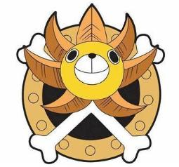
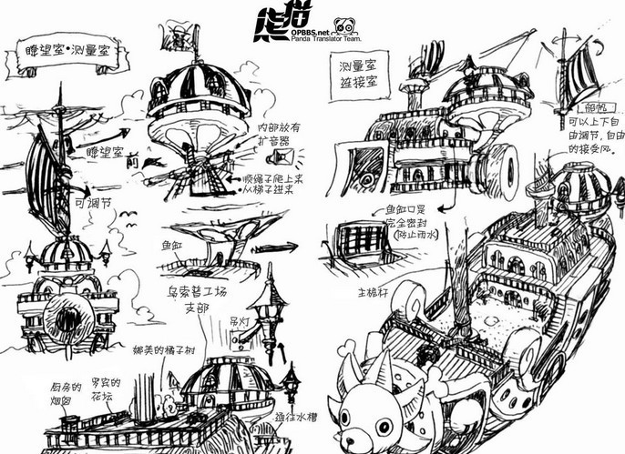

1.船只介绍
千里阳光号[THOUSANDS OF SUNNY]（萨乌森·桑尼号、千阳号）（台译：千阳号）的取名者是冰山，意义为“要像太阳一样，从容快乐的，穿越残酷的万里大海”。它由弗兰克设计，使用价值不菲、世界上最强的巨树“亚当”为材料，并由水之七岛的艾斯巴古、包利、毕普利·露露、戴鲁斯通和横纲合作赶工制造。 主要特色是狮子造形的船头及“士兵船坞系统”，此外还有草皮作成的甲板，附有大型水族馆的房间、图书馆等许多方便的设备。 “大事件”发生两年后，弗兰克回到香波地诸岛为千里阳光号保养与安装新兵器，并由雷利镀膜，向新世界出发。
2.船坞结构
士兵船坞系统（SOLDIER DOCK SYSTEM） 结构及外光图等 结构及外光图等(9) 由弗兰奇开发，用于辅助母船巡航的子船系统（也可说是士兵）。圆形的船坞分成6个小房间，依舵轮上头的数字和旁边的拉杆选择和频道对应的舰载机，乘坐者可以先到位于船中心的“乘组员待机室”待命。
零号频道－外轮 以可乐为动力发动船两侧的外轮，能够轻松应付帆船最怕的两种窘境：龙卷风或暴风雨。
一号频道－白木马一号 原本是奈美的威霸，后来前端被弗兰奇改成了可爱的马头造型，鼻子部分附有照明灯，但因没经过奈美同意而被她臭骂一顿。威霸是空岛特有的单人用交通工具，就像水上摩托车那样能在海面行驶，其操作得要解暸海水的流动而十分困难，所有成员当中只有奈美会操作。草帽海贼团的这辆威霸装有已绝种的“喷风贝”两枚，马力相当强大。
二号频道－迷你梅利二号 四人座蒸汽外轮船，弗兰奇参考了梅利号的造型打造而成。后来加入的布鲁克从未看过前进梅利号的模样，因此他都将迷你梅利二号昵称为“小羊羊”。
三号频道－鲨鱼三号 三人座侦查潜水艇，里头附有潜望镜和电话虫（一种在伟大航路作为通讯工具使用、外形像蜗牛的生物），此潜水艇的最深限度能潜到5,000米。
四号频道－黑犀FR-U四号 于第二部中登场，弗兰奇借由导入形状记忆合金“瓦波金属”制成的新兵器，前端有着犀牛头型的重型机车。
五号频道－腕龙战车五号 于第二部中登场，弗兰奇借由导入形状记忆合金“瓦波金属”制成的新兵器，炮口为腕龙头型的坦克车。
3.船长介绍
| 关于路飞的详细介绍 | |
| 关于路飞的视频剪辑 |
蒙奇·D·路飞，动漫《航海王》及衍生作品中的角色，首次出现于动漫第二集，外号“草帽小子”，草帽海贼团的船长。革命家蒙奇·D·龙的儿子，前海军中将蒙奇·D·卡普的孙子。特征是“草帽”以及眼下那道代表勇气的刀疤。他拥有着比大海还要宽阔的心胸，比天空还要纯净的灵魂。对伙伴不离不弃，对权力、势力、地位毫不在意。